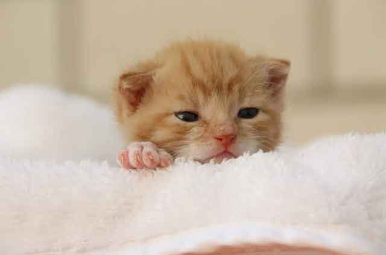
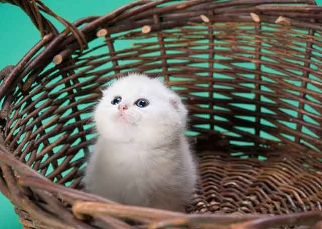
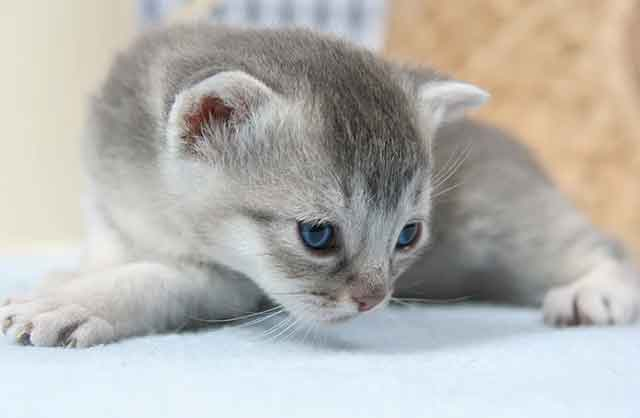
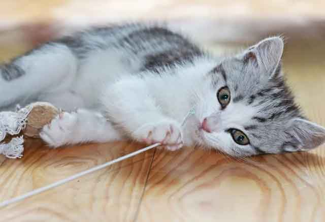
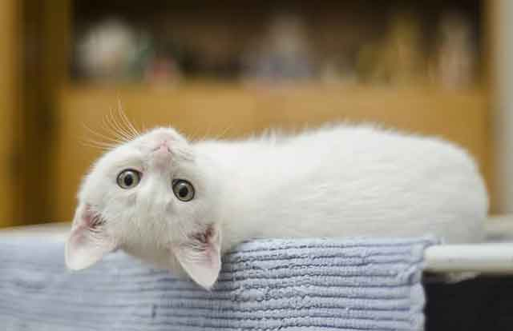

새끼 고양이 입양 시 주의할 점!
많은 사람이 강아지, 고양이를 입양해 키우지만 한해 발생하는 유기반려동물은 점점 늘어나고 있습니다. 많이 입양하지만, 그만큼 유기하는 사람도 많다는 뜻이죠. 이런 상황이 자주 발생하는 것은 아직 반려동물을 키울 준비가 되지 않은 사람이 단순히 귀엽고 예쁜 외모만 보고 입양하기 때문인데요. 반려동물을 키우기 위해서는 절대적인 책임감과 키우는 반려동물의 특성을 잘 이해하는 것이 중요합니다! 만약, 새끼 고양이를 입양했다면 주의해야 할 점이 뭔지 알아보겠습니다.
"이른 시일 내 예방접종 & 건강검진"
실내든 실외든 고양이를 키우는 집사라면 예방접종과 건강검진은 필수입니다. 특히 새끼 고양이를 키우고 있다면 말이죠! 특정 바이러스는 직접 접촉을 하지 않더라도 외출하고 돌아온 집사의 소지품 및 신체를 통해 바이러스가 전염될 수 있습니다. 따라서 새끼 고양이를 이제 막 키우기 시작했다면, 예방접종과 건강검진이 꼭 필요합니다!
"고양이를 위한 사회화 교육, 어릴 때부터 시작!"
새끼 고양이라면 엄마와 떨어진 지 얼마 되지 않았을뿐더러 사회화 교육이 필요한 때입니다. 누구와도 잘 지내는 고양이로 키우고 싶다면, 어릴 때부터 다양한 사람과 다른 반려동물과의 만남을 자주 가지면서 긍정적인 기억을 심어주는 것이 좋습니다. 이런 주기적인 연습이 이어졌을 때 고양이는 성묘가 되어서도 낯선 사람을 두려워하지 않습니다.
"배변 훈련은 어릴 때부터!"
대부분 고양이는 스스로 배변 활동을 잘합니다. 하지만 주변 환경에 익숙하지 않을 때는 환경에 적응하면서 화장실을 확실하게 구분할 수 있도록 도와줘야 하는 데요. 화장실은 사람이 자주 드나들지 않은 곳으로 정하고 화장실이라는 것을 인지할 수 있도록 자리를 정해 놓는 것이 좋습니다. 또한, 모래를 자주 교체해 주고 교체할 때는 배변 판 전체를 씻어 깔끔히 치워주는 게 좋습니다.
"빗질로 그루밍 교육을"
어미와 일찍 떨어진 고양이는 그루밍 교육을 마저 다 마치지 못했을 가능성이 큽니다. 새끼고양이는 물론 가족 전체를 위해서도 빗질을 통해 그루밍 교육을 해주는 것이 좋습니다. 장모 종은 매일, 단모 종은 일주일에 1~2회 정도로 빗질을 해주는 것이 좋습니다.
이 외에도 낯선 곳에서 잘 적응할 수 있도록 될 수 있으면 고양이를 위한 시간을 많이 가져주는 것이 좋습니다. 갓 태어난 아이가 엄마의 품에서 젖을 먹으면서 긴밀한 유대감을 형성하듯이 새끼 고양이 역시 어린 시절 집사와 함께 보내는 시간의 여부에 따라 향후 학습능력이나 발달 속도 차이가 발생할 수 있습니다. 건강하고 밝은 고양이로 키우고 싶다면, 새끼 고양이 시절부터 올바른 성장을 위한 준비를 해두는 것이 중요합니다.
[출처] 새끼 고양이 입양 시 주의할 점! ｜ 작성자 브런치